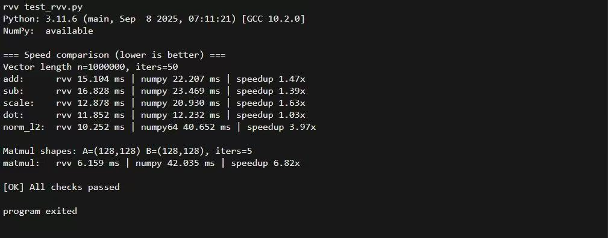

English
EnglishUsing RVV Acceleration
Introduction
MaixPy ships an rvv Python extension module that hardware-accelerates NumPy-compatible vector and matrix operations on platforms with the RISC-V Vector extension (RVV), such as SG2002 / C906FDV. On platforms without RVV it falls back to a scalar implementation automatically.
- Module name:
rvv - Target platform: SG2002 / C906FDV with RVV 0.7.1
- Data type:
float32only - Design goals:
- Accept NumPy
ndarrayor any object implementing the buffer protocol - Convert inputs internally to the
float32+ C-contiguous buffers the kernel expects - Return
numpy.ndarraywhen NumPy is available (pybind11py::array_t<float>) - Provide a scalar fallback so the same source can be built and tested on non-RISC-V hosts
- Accept NumPy
Source code and release notes: yangwenjie1231/sg2002_rvv.
Installation
Install the prebuilt wheel on MaixCAM:
pip install --force-reinstall ./clib/rvv-0.1.3-py3-none-any.whl
You can then check whether RVV acceleration is available, and fall back to CPU computation when it is not:
try:
import rvv
# Check that the rvv module exposes the required functions
if hasattr(rvv, 'add') and hasattr(rvv, 'sub') and hasattr(rvv, 'norm_l2'):
_RVV_AVAILABLE = True
print("✓ RVV hardware acceleration available")
else:
_RVV_AVAILABLE = False
rvv = None
print("⚠ rvv module found but missing required functions, falling back to CPU")
except ImportError:
_RVV_AVAILABLE = False
rvv = None
print("⚠ rvv module unavailable, falling back to CPU")
Note: the wheel itself does not depend on NumPy (
install_requires=[]). However, passingnumpy.ndarrayinputs, or running comparison tests against NumPy, requires NumPy to be installed in the target environment. On embedded Linux, building or installing NumPy is usually not possible.
Performance comparison

On SG2002, element-wise operations such as add / sub / scale show the clearest RVV gains. Whether matmul beats NumPy depends on whether NumPy is linked against a high-performance BLAS — embedded NumPy builds usually are not, or perform poorly.
Input data model
All rvv functions read their inputs through the buffer protocol (PEP 3118).
Supported input types
numpy.ndarray(dtype=np.float32)- Other objects implementing the buffer protocol (some tensor libraries, custom buffers)
Hard requirements
- dtype must be float32
- PEP 3118
format == 'f' itemsize == 4
- PEP 3118
- Must be C-contiguous (row-major contiguous)
- Non-contiguous or sliced views (strides that do not describe a contiguous layout) raise an exception
Automatic conversion
The internal as_f32_buffer() tries the NumPy path first:
py::array_t<float, c_style | forcecast>
This means:
- When NumPy is available,
float64or non-contiguous arrays are copied/converted to contiguousfloat32before computation. - When NumPy is unavailable, only the generic buffer path is used, and inputs that violate the requirements above raise an error immediately.
For zero-copy behaviour and best performance, make sure the input already satisfies the requirements:
x = np.ascontiguousarray(x, dtype=np.float32)
API reference
The top-level module is named rvv and provides the following functions:
| Function | Description |
|---|---|
rvv.add(a, b) |
1-D element-wise addition |
rvv.sub(a, b) |
1-D element-wise subtraction |
rvv.scale(a, k) |
1-D vector scaled by a scalar |
rvv.dot(a, b) |
1-D dot product (inner product) |
rvv.norm_l2(a) |
1-D L2 norm |
rvv.matmul(A, B) |
2-D matrix multiplication |
rvv.add(a, b) -> ndarray[float32]
What it does: element-wise addition.
Parameters:
a: 1-D float32 buffer (expectedndim=1)b: 1-D float32 buffer (expectedndim=1)
Returns: a 1-D float32 array with the same length as a
Errors:
ValueErroraorbis not 1-D:a must have ndim=1, got ndim=...aandbhave different lengths:add: a and b must have the same length- input is not C-contiguous:
a must be C-contiguous float32 buffer
TypeError: input is not float32 (format != 'f'oritemsize != 4)
Example:
import numpy as np
import rvv
a = np.arange(8, dtype=np.float32)
b = np.ones(8, dtype=np.float32)
print(rvv.add(a, b))
rvv.sub(a, b) -> ndarray[float32]
What it does: element-wise subtraction, i.e. out[i] = a[i] - b[i].
Parameters, return value and errors are the same as add; the two vectors must have equal length.
import numpy as np
import rvv
a = np.arange(8, dtype=np.float32)
b = np.ones(8, dtype=np.float32)
print(rvv.sub(a, b))
rvv.scale(a, k) -> ndarray[float32]
What it does: scales a vector by a scalar.
Parameters:
a: 1-D float32 bufferk: Pythonfloat
Returns: a 1-D float32 array
Errors: ValueError / TypeError, validated the same way as add
import numpy as np
import rvv
a = np.arange(8, dtype=np.float32)
print(rvv.scale(a, 0.5))
rvv.dot(a, b) -> float
What it does: dot product (inner product), i.e. sum_i a[i] * b[i].
Parameters:
a: 1-D float32 bufferb: 1-D float32 buffer
Returns: a Python float
Errors:
ValueError: length mismatch,dot: a and b must have the same length- dtype / contiguity / ndim errors as above
import numpy as np
import rvv
a = np.arange(8, dtype=np.float32)
print(rvv.dot(a, a))
rvv.norm_l2(a) -> float
What it does: L2 (Euclidean) norm, defined as sqrt(dot(a, a)).
Parameters: a: 1-D float32 buffer
Returns: a Python float
A note on numerical error: dot and norm_l2 are reduction operations. For very large vectors (for example 1e6 elements), different reduction orders (RVV blocking, scalar loops, NumPy/BLAS vectorisation) can produce a very small relative error compared with NumPy. Compare with a relative tolerance (for example 1e-4 ~ 1e-3) rather than strict equality.
import numpy as np
import rvv
a = np.random.randn(1000000).astype(np.float32)
print(rvv.norm_l2(a))
rvv.matmul(A, B) -> ndarray[float32]
What it does: matrix multiplication.
- Input:
Aof shape(m, k),Bof shape(k, n) - Output:
Cof shape(m, n)
Parameters:
A: 2-D float32 buffer (ndim=2, C-contiguous, row-major)B: 2-D float32 buffer (ndim=2, C-contiguous, row-major)
Returns: a 2-D float32 array
Errors:
ValueError- dimension is not 2:
A must have ndim=2, got ndim=... - shape mismatch:
matmul: shape mismatch: A is (m,k) but B is (k2,n)
- dimension is not 2:
import numpy as np
import rvv
A = np.random.randn(2, 3).astype(np.float32)
B = np.random.randn(3, 4).astype(np.float32)
C = rvv.matmul(A, B)
print(C.shape)
Combined example
import numpy as np
import rvv
a = np.arange(8, dtype=np.float32)
b = np.arange(8, dtype=np.float32)
print(rvv.add(a, b))
print(rvv.sub(a, b))
print(rvv.scale(a, 2.0))
print(rvv.dot(a, b))
print(rvv.norm_l2(a))
A = np.arange(6, dtype=np.float32).reshape(2, 3)
B = np.arange(12, dtype=np.float32).reshape(3, 4)
print(rvv.matmul(A, B))
Common errors
... must be float32-compatible buffer ...
The input is not float32. Fix:
x = x.astype(np.float32, copy=False)
... must be C-contiguous float32 buffer
The input is a non-contiguous view, such as a slice or a transpose. Fix:
x = np.ascontiguousarray(x, dtype=np.float32)
add/sub/dot: a and b must have the same length
The two vectors have different lengths.
Performance tips
- Make sure inputs are float32 and C-contiguous to avoid unnecessary copies.
- On large arrays,
add/sub/scaleare where RVV gains show up most clearly. - Whether
matmulbeats NumPy depends on whether NumPy is linked against a high-performance BLAS — embedded NumPy builds usually are not, or perform poorly.
Building from source
This section is for users who need to build the module on SG2002 themselves, or to develop on top of it.
Implementation map
- Python bindings:
rvv_ext/main/src/bind_rvv.cpp - C++ public interface declarations:
rvv_ext/main/include/rvv.hpp - RVV 0.7.1 implementation:
rvv_ext/main/src/rvv_rvv071.cpp(compiled only when__riscv_vectoris defined) - Scalar implementation:
rvv_ext/main/src/rvv_scalar.cpp
Choosing a build mode: cross-compile (MaixCAM) vs host test (Linux)
main/CMakeLists.txt supports two build modes:
- Cross-compile to SG2002 (recommended): enable
MaixCam- Enables the RVV ISA flags (such as
-march=rv64imafdcv0p7xthead) - Links against the SDK's
python3_lib_maixcam_musl_3.11.6headers/libraries, avoiding a missingPython.h
- Enables the RVV ISA flags (such as
- Host Linux test: enable
Linux- Tries the system
Python.hfirst (python3-dev), then falls back to the SDK python component
- Tries the system
The target Python is 3.11.6 (SDK component python3_lib_maixcam_musl_3.11.6).
If you see
fatal error: Python.h: No such file or directory, the current build mode did not pick up the Python development headers.
Build caveats
- Always run the build from the project root
rvv_ext/, not fromrvv_ext/main/. Otherwise the configuration is generated underrvv_ext/main/build/...and the output looks like an infinite loop. - The
MY_SDK_PATHenvironment variable must be set, otherwise the build reports a missing/tools/cmds. - When cross-compiling,
TOOLCHAIN_PATHmust be an absolute path, otherwise CMake reportsTOOLCHAIN_PATH set error: .... distcleanremovesbuild/, after whichcmake --build build ...fails withError: could not load cache. You must re-runpython3 project.py buildto regeneratebuild/CMakeCache.txtfirst.- NumPy usually cannot be built or installed on embedded Linux. This library's wheel does not depend on NumPy, but comparing results or speed against NumPy requires NumPy in the target environment.
norm_l2/dotcan differ slightly from NumPy on very large vectors (for example 1e6) due to floating-point error from reduction ordering. Compare with a relative tolerance, not strict equality.
Building with Auto-bind-Python-from-CC--main
This project uses the same build system as Auto-bind-Python-from-CC--main/examples/demo.
0) Set the SDK environment variable (required)
export MY_SDK_PATH=/root/xmusic/Auto-bind-Python-from-CC--main/Auto-bind-Python-from-CC--main
1) Open menuconfig
cd /root/xmusic/rvv_ext
python3 project.py menuconfig
2) Configure the toolchain (cross-compiling to SG2002)
-mcpu=c906fdv-march=rv64imafdcv0p7xthead-mcmodel=medany-mabi=lp64d
You can also configure without menuconfig by passing flags:
python3 project.py config \
--toolchain /root/xmusic/host-tools/gcc/riscv64-linux-musl-x86_64/bin \
--toolchain-prefix riscv64-unknown-linux-musl-
Or by using the environment variable read by the project's top-level CMakeLists.txt:
export MY_TOOLCHAIN_PATH=/root/xmusic/toolchains/maixcam/host-tools/gcc/riscv64-linux-musl-x86_64/bin
3) Build and produce the wheel
python3 project.py build
Artifacts:
- Compiled extension:
build/main/libmain.so - Wheel:
dist/*.whl
4) Verify RVV is enabled (optional)
After python3 project.py build, check whether the compile command lines in the build log contain:
-march=rv64imafdcv0p7xthead
If the flag is present, __riscv_vector should be defined and the RVV implementation (rvv_rvv071.cpp) is compiled into the library.
IDE code completion
rvv is a binary extension module (rvv.so), so an IDE cannot infer function signatures from source the way it can for pure Python. The project provides type hints through PEP 561:
rvv_ext/rvv.pyi: module stub providing signatures and docs foradd/sub/scale/dot/norm_l2/matmulrvv_ext/py.typed: marker file telling tools and IDEs that the package ships type information
Both are included in the wheel (see rvv_ext/setup.py).
Option A: install the wheel to get completion (recommended)
pip install --no-deps --force-reinstall dist/*.whl
Option B: get completion while developing directly in the source tree
- Make sure your IDE's interpreter/project index can see
rvv_ext/rvv.pyi - In PyCharm, mark
rvv_ext/as Sources Root (or add it toPYTHONPATH)
Either way, the runtime import is still
import rvv.
Testing
Tests live in rvv_ext/tests and require NumPy plus pytest:
pytest -q
A performance comparison script that does not depend on pytest:
python3 tests/test_rvv.py
On SG2002 you can also run the micro-benchmark:
python3 tests/bench_perf.py
Troubleshooting
Error: could not load cache
Raised by cmake --build build ... when the CMake cache (build/CMakeCache.txt) is missing. Common causes:
- You ran
python3 project.py distcleanand did not re-run the CMake configure step afterwards - The
build/directory was deleted or is empty
Fix:
cd /path/to/rvv_ext
# Re-run configure (generates build/CMakeCache.txt)
python3 project.py build
# Then compile
cmake --build build --target main -- -j"$(nproc)"
setup.py reports Native library not found: build/main/libmain.so
This means the extension has not been built yet, or it was built into a different directory. Check with:
find build -maxdepth 4 -name 'libmain.so' -o -name '*.so' | sort
If libmain.so exists but is not under build/main/, adjust SO_FILE_PATH in setup.py accordingly.
Copy-paste commands (embedded Linux)
cd /path/to/rvv_ext # adjust to your real path
# (Optional) full clean: removes build/ and CMakeCache.txt
python3 project.py distclean
# 1) Configure CMake (re-creates build/ and build/CMakeCache.txt)
python3 project.py build
# Sanity check (should exist after configure)
ls -la build/CMakeCache.txt
# 2) Compile the extension shared library (creates build/main/libmain.so)
cmake --build build --target main -- -j"$(nproc)"
# Sanity check (should exist after compile)
ls -la build/main/libmain.so
# 3) Build the wheel (creates dist/*.whl)
python3 setup.py bdist_wheel
# 4) List the wheel
ls -la dist
If you only want to remove compiled objects but keep the CMake cache, prefer
python3 project.py cleanoverdistclean.
License
This project is licensed under LGPL-3.0. See the LICENSE file in the repository for details.
Copyright (C) 2026 ywj <yangwenjie1231@qq.com>